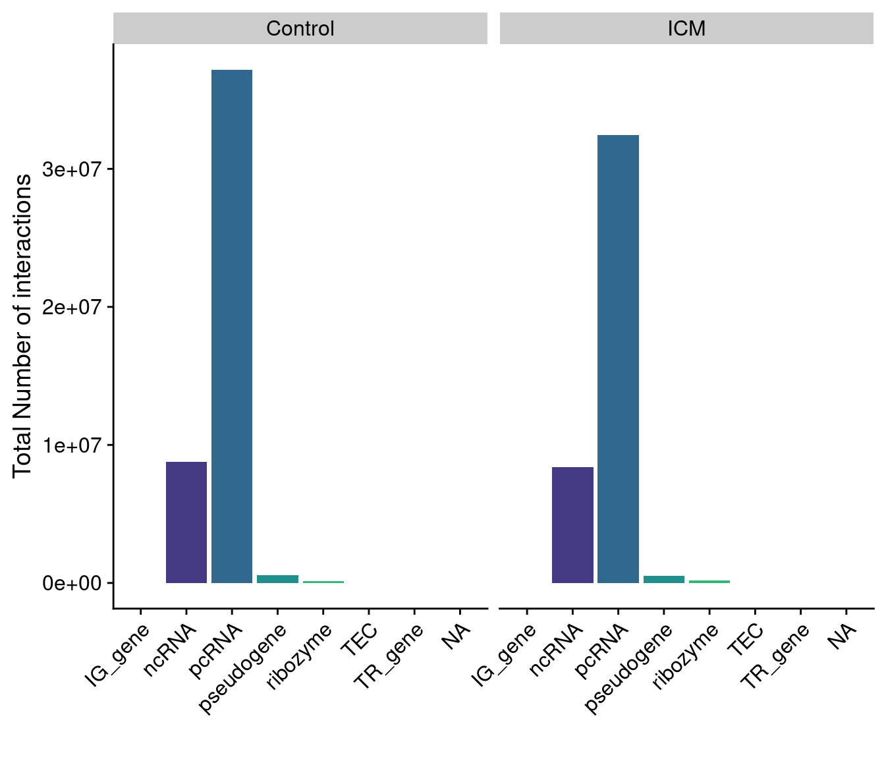

Analysis of MeDip-Seq data
Shashank Tiwari
Most recent update:
2023-06-02
#root.dir <- here::here()
knitr::opts_chunk$set(
collapse = TRUE,
comment = "#>",
#root.dir = root.dir
fig.height = 6,
fig.width = 7.00787 #178mm
)
knitr::opts_knit$set(#root.dir = "~/Radicl_Seq/Radicl_seq_functions/",
dpi = 350)
library(data.table)
library(ggplot2)
library(tidyverse)## Warning: package 'stringr' was built under R version 4.2.2library(cowplot)
library(Rsamtools)## Warning: package 'BiocGenerics' was built under R version 4.2.1library(rtracklayer)## Warning: package 'rtracklayer' was built under R version 4.2.2library(viridis)## Warning: package 'viridisLite' was built under R version 4.2.1library(dplyr)
library(genomation)## Warning: replacing previous import 'Biostrings::pattern' by 'grid::pattern'
## when loading 'genomation'library(biomaRt)
library(GenomicRanges)
library(DT)
library(magick)
library(patchwork)
library(slickR)
library(svglite)
library(scales)
#library(ggpubr)#> used (Mb) gc trigger (Mb) max used (Mb)
#> Ncells 10851032 579.6 17338411 926.0 11825405 631.6
#> Vcells 1265377212 9654.1 1653230604 12613.2 1265440185 9654.6
#> trans cis bait.to.bait
#> "76%" "24%" "25%"
#> trans cis bait.to.bait
#> "75%" "25%" "1%"
#> trans cis bait.to.bait
#> "79%" "21%" "26%"
#> trans cis bait.to.bait
#> "78%" "22%" "1%"
#> trans cis bait.to.bait
#> "76%" "24%" "23%"
#> trans cis bait.to.bait
#> "74%" "26%" "1%"
#> trans cis bait.to.bait
#> "80%" "20%" "24%"
#> trans cis bait.to.bait
#> "78%" "22%" "1%"sktech = htmltools::withTags(table(
class = 'display',
thead(
tr(
th(rowspan = 2, 'Type'),
th(colspan = 5, 'All'),
th(colspan = 5, 'Significant')
),
tr(
lapply( rep(c("Ctrl Coding", "Ctrl NonCoding","ICM Coding","ICM NonCoding"),2), th)
)
)
))
DT::datatable(qc_df, container = sktech, rownames = TRUE,options = list(scrollX=TRUE))Preprocessing
#read in the data
control_coding$type <- as.factor("Control Coding")
control_nc$type <- as.factor("Control NonCoding")
ICM_coding$type <- as.factor("ICM Coding")
ICM_nc$type <- as.factor("ICM NonCoding")
merged_runs <- rbind(control_coding, control_nc,
ICM_coding,ICM_nc)
merged_runs$signif <- ifelse(merged_runs$q.value<0.05, "significant","non-significant")
merged_runs$frag.length <- merged_runs$target.end-merged_runs$target.start
merged_runs$bait.length <- merged_runs$bait.end-merged_runs$bait.start
#make bins split res by qvalue bins
merged_runs <- merged_runs[!is.na(merged_runs$q.value),]
merged_runs[,q_bin:=cut(q.value, breaks=c(0,0.05,0.2,0.4,0.6,0.8,1),include.lowest=TRUE),]
merged_stretch_cis <- merged_runs[!is.na(distance),.(count2=1:count),names(merged_runs)]
#get gene names
baits <- fread("~/Radicl_Seq/Gene_locations_no_ovrlps.bed")
colnames(baits) <- c("chr","start","end","bait_name")#> used (Mb) gc trigger (Mb) max used (Mb)
#> Ncells 10936334 584.1 17338411 926.0 17338411 926.0
#> Vcells 1908717091 14562.4 6155472323 46962.6 5128160107 39124.8Relationship between RNA length and detected interactions
merged_runs[,bait_name := baits$bait_name[match(merged_runs$bait.start,baits$start)]]
merged_runs_non_b2b <- merged_runs[bait.to.bait==FALSE]
merged_runs_b2b <- merged_runs[bait.to.bait==TRUE]
setorder(merged_runs_non_b2b,q.value)
#make correlation test
cor.test(merged_runs_non_b2b$bait.length,merged_runs_non_b2b$q.value,
method="spearman", exact = F)
#>
#> Spearman's rank correlation rho
#>
#> data: merged_runs_non_b2b$bait.length and merged_runs_non_b2b$q.value
#> S = 6.6319e+22, p-value < 2.2e-16
#> alternative hypothesis: true rho is not equal to 0
#> sample estimates:
#> rho
#> 0.006661967
cor.test(merged_runs_non_b2b$bait.length, merged_runs_non_b2b$count,
method="spearman", exact = F)
#>
#> Spearman's rank correlation rho
#>
#> data: merged_runs_non_b2b$bait.length and merged_runs_non_b2b$count
#> S = 6.2256e+22, p-value < 2.2e-16
#> alternative hypothesis: true rho is not equal to 0
#> sample estimates:
#> rho
#> 0.06751811
nrow(merged_runs_non_b2b[frag.length==1999])/nrow(merged_runs_non_b2b)
#> [1] 0.9582998
cor.test(merged_runs_non_b2b$frag.length, merged_runs_non_b2b$count,
method="spearman",exact = F)
#>
#> Spearman's rank correlation rho
#>
#> data: merged_runs_non_b2b$frag.length and merged_runs_non_b2b$count
#> S = 6.8721e+22, p-value < 2.2e-16
#> alternative hypothesis: true rho is not equal to 0
#> sample estimates:
#> rho
#> -0.02931858
cor.test(merged_runs_non_b2b$frag.length, merged_runs_non_b2b$q.value,
method="spearman",exact=F)
#>
#> Spearman's rank correlation rho
#>
#> data: merged_runs_non_b2b$frag.length and merged_runs_non_b2b$q.value
#> S = 6.6879e+22, p-value < 2.2e-16
#> alternative hypothesis: true rho is not equal to 0
#> sample estimates:
#> rho
#> -0.001728128
cor.test(merged_runs_non_b2b[frag.length!=1999]$frag.length,
merged_runs_non_b2b[frag.length!=1999]$count,
method="spearman",exact=F)
#>
#> Spearman's rank correlation rho
#>
#> data: merged_runs_non_b2b[frag.length != 1999]$frag.length and merged_runs_non_b2b[frag.length != 1999]$count
#> S = 4.8905e+18, p-value < 2.2e-16
#> alternative hypothesis: true rho is not equal to 0
#> sample estimates:
#> rho
#> -0.01018614
cor.test(merged_runs_non_b2b[frag.length!=1999]$frag.length,
merged_runs_non_b2b[frag.length!=1999]$q.value,
method="spearman",exact=F)
#>
#> Spearman's rank correlation rho
#>
#> data: merged_runs_non_b2b[frag.length != 1999]$frag.length and merged_runs_non_b2b[frag.length != 1999]$q.value
#> S = 4.846e+18, p-value = 0.08115
#> alternative hypothesis: true rho is not equal to 0
#> sample estimates:
#> rho
#> -0.0009947227
#check bait to bait
cor.test(merged_runs_b2b$frag.length, merged_runs_b2b$q.value,
method="spearman",exact=F)
#>
#> Spearman's rank correlation rho
#>
#> data: merged_runs_b2b$frag.length and merged_runs_b2b$q.value
#> S = 1.0089e+21, p-value = 7.003e-13
#> alternative hypothesis: true rho is not equal to 0
#> sample estimates:
#> rho
#> 0.001681235
cor.test(merged_runs_b2b$frag.length, merged_runs_b2b$count,
method="spearman",exact=F)
#>
#> Spearman's rank correlation rho
#>
#> data: merged_runs_b2b$frag.length and merged_runs_b2b$count
#> S = 9.9579e+20, p-value < 2.2e-16
#> alternative hypothesis: true rho is not equal to 0
#> sample estimates:
#> rho
#> 0.01470405
#check non-b2b without cis
cor.test(merged_runs_non_b2b[target.chr==bait.chr]$bait.length,
merged_runs_non_b2b[target.chr==bait.chr]$q.value,
method="spearman",exact=F)
#>
#> Spearman's rank correlation rho
#>
#> data: merged_runs_non_b2b[target.chr == bait.chr]$bait.length and merged_runs_non_b2b[target.chr == bait.chr]$q.value
#> S = 1.0754e+21, p-value < 2.2e-16
#> alternative hypothesis: true rho is not equal to 0
#> sample estimates:
#> rho
#> 0.005328939
cor.test(merged_runs_non_b2b[target.chr==bait.chr]$bait.length,
merged_runs_non_b2b[target.chr==bait.chr]$count,
method="spearman",exact=F)
#>
#> Spearman's rank correlation rho
#>
#> data: merged_runs_non_b2b[target.chr == bait.chr]$bait.length and merged_runs_non_b2b[target.chr == bait.chr]$count
#> S = 1.0222e+21, p-value < 2.2e-16
#> alternative hypothesis: true rho is not equal to 0
#> sample estimates:
#> rho
#> 0.05450374
#raw pvalue
cor.test(merged_runs_non_b2b[frag.length!=1999]$frag.length,
merged_runs_non_b2b[frag.length!=1999]$p.value,
method="spearman",exact=F)
#>
#> Spearman's rank correlation rho
#>
#> data: merged_runs_non_b2b[frag.length != 1999]$frag.length and merged_runs_non_b2b[frag.length != 1999]$p.value
#> S = 4.8445e+18, p-value = 0.239
#> alternative hypothesis: true rho is not equal to 0
#> sample estimates:
#> rho
#> -0.0006715652
cor.test(merged_runs_non_b2b$frag.length,merged_runs_non_b2b$p.value,
method="spearman",exact=F)
#>
#> Spearman's rank correlation rho
#>
#> data: merged_runs_non_b2b$frag.length and merged_runs_non_b2b$p.value
#> S = 6.702e+22, p-value < 2.2e-16
#> alternative hypothesis: true rho is not equal to 0
#> sample estimates:
#> rho
#> -0.003840239
#summarised counts per fragment
bait_count <- merged_runs_non_b2b[,sum(count),by=.(bait.id,bait.length)]
merged_runs_sum_non_b2b <-
cor.test(bait_count$bait.length,bait_count$V1,
method="spearman",exact=F)
frag_count <- merged_runs_non_b2b[,sum(count),by=.(target.id,frag.length)]
cor.test(frag_count$frag.length,frag_count$V1,
method="spearman",exact=F)
#>
#> Spearman's rank correlation rho
#>
#> data: frag_count$frag.length and frag_count$V1
#> S = 4.2274e+17, p-value < 2.2e-16
#> alternative hypothesis: true rho is not equal to 0
#> sample estimates:
#> rho
#> 0.02869953
#bait to bait interactions
bait_count2 <- merged_runs_b2b[,sum(count),by=.(bait.id,bait.length)]
merged_run_sum_frag_b2b <-
cor.test(bait_count2$bait.length,bait_count2$V1,
method="spearman",exact=F)
#Print summarized counts by bait where it wasnt bait to bait
print(merged_runs_sum_non_b2b)
#>
#> Spearman's rank correlation rho
#>
#> data: bait_count$bait.length and bait_count$V1
#> S = 2.0868e+12, p-value < 2.2e-16
#> alternative hypothesis: true rho is not equal to 0
#> sample estimates:
#> rho
#> 0.7031426
#Print summ counts by bait where it is bait to bait
print(merged_run_sum_frag_b2b)
#>
#> Spearman's rank correlation rho
#>
#> data: bait_count2$bait.length and bait_count2$V1
#> S = 9.7501e+11, p-value < 2.2e-16
#> alternative hypothesis: true rho is not equal to 0
#> sample estimates:
#> rho
#> 0.6756495Trying wilcoxons test
#non bait to bait
non_b2b_bait_wt <-
wilcox.test(merged_runs_non_b2b[q.value<0.05]$bait.length,
merged_runs_non_b2b[q.value>=0.05]$bait.length,
alternative="greater")
non_b2b_frag_wt <-
wilcox.test(merged_runs_non_b2b[q.value<0.05]$frag.length,
merged_runs_non_b2b[q.value>=0.05]$frag.length,
alternative="greater")
##bait to bait
b2b_bait_wt <-
wilcox.test(merged_runs_b2b[q.value<0.05]$bait.length,
merged_runs_b2b[q.value>=0.05]$bait.length,
alternative="greater")
b2b_frag_wt <-
wilcox.test(merged_runs_b2b[q.value<0.05]$frag.length,
merged_runs_b2b[q.value>=0.05]$frag.length,
alternative="greater")
print(non_b2b_bait_wt)
#>
#> Wilcoxon rank sum test with continuity correction
#>
#> data: merged_runs_non_b2b[q.value < 0.05]$bait.length and merged_runs_non_b2b[q.value >= 0.05]$bait.length
#> W = 2.3476e+12, p-value = 1
#> alternative hypothesis: true location shift is greater than 0
print(non_b2b_frag_wt)
#>
#> Wilcoxon rank sum test with continuity correction
#>
#> data: merged_runs_non_b2b[q.value < 0.05]$frag.length and merged_runs_non_b2b[q.value >= 0.05]$frag.length
#> W = 2.5875e+12, p-value = 3.046e-16
#> alternative hypothesis: true location shift is greater than 0
print(b2b_bait_wt)
#>
#> Wilcoxon rank sum test with continuity correction
#>
#> data: merged_runs_b2b[q.value < 0.05]$bait.length and merged_runs_b2b[q.value >= 0.05]$bait.length
#> W = 8.733e+10, p-value = 1
#> alternative hypothesis: true location shift is greater than 0
print(b2b_frag_wt)
#>
#> Wilcoxon rank sum test with continuity correction
#>
#> data: merged_runs_b2b[q.value < 0.05]$frag.length and merged_runs_b2b[q.value >= 0.05]$frag.length
#> W = 9.4457e+10, p-value = 0.9807
#> alternative hypothesis: true location shift is greater than 0Show the plot and results
plt_non_b2b_frag <-
ggplot(merged_runs_non_b2b,
aes(x=signif,y=log(frag.length,base = 10),fill=signif))+
geom_violin(trim = FALSE,outlier.shape=NA)+
geom_boxplot(width=0.1, outlier.shape = NA)+
theme_cowplot()+
scale_fill_viridis(discrete = T,alpha = 0.5)+
theme(legend.position="none")+
ylab("Log 10 length")+
xlab("Significant Interaction")+
ggtitle("Fragment length Non-bait-to-bait interactions")+
theme(plot.title = element_text(size=10))+
coord_cartesian(ylim = quantile(log(merged_runs_non_b2b$frag.length,base = 10),
c(0.1,0.9)))
#> Warning in geom_violin(trim = FALSE, outlier.shape = NA): Ignoring unknown
#> parameters: `outlier.shape`
plt_non_b2b_bait <-
ggplot(merged_runs_non_b2b,
aes(x=signif,y=log(bait.length,base=10),fill=signif))+
geom_violin(trim = FALSE,outlier.shape=NA)+
geom_boxplot(width=0.1,outlier.shape = NA)+
theme_cowplot()+
scale_fill_viridis(discrete = T,alpha = 0.5)+
theme(legend.position = "none")+
ylab("Log 10 Length") +
xlab("Significant Interaction")+
ggtitle("Bait length non-bait-to-bait interactions")+
theme(plot.title = element_text(size=10))
#> Warning in geom_violin(trim = FALSE, outlier.shape = NA): Ignoring unknown
#> parameters: `outlier.shape`
plt_b2b_frag <-
ggplot(merged_runs_b2b,
aes(x=signif,y=log(frag.length,base = 10),fill=signif))+
geom_violin(trim = FALSE,outlier.shape=NA)+
geom_boxplot(width=0.1,outlier.shape = NA)+
theme_cowplot()+
scale_fill_viridis(discrete = T,alpha=0.5)+
theme(legend.position = "none")+
ylab("Log 10 Length")+
xlab("Significant Interaction")+
ggtitle("Fragment Length Bait-to-bait interactions")+
theme(plot.title = element_text(size = 10))
#> Warning in geom_violin(trim = FALSE, outlier.shape = NA): Ignoring unknown
#> parameters: `outlier.shape`
plt_b2b_bait <-
ggplot(merged_runs_b2b,
aes(x=signif,y=log(bait.length,base = 10),fill=signif))+
geom_violin(trim = FALSE,outlier.shape=NA)+
geom_boxplot(width=0.1,outlier.shape = NA)+
theme_cowplot()+
scale_fill_viridis(discrete = T,alpha = 0.5)+
theme(legend.position = "none")+
ylab("Log 10 Length")+
xlab("Significant Interactions")+
ggtitle("Bait length bait-to-bait interactions")+
theme(plot.title = element_text(size=10))
#> Warning in geom_violin(trim = FALSE, outlier.shape = NA): Ignoring unknown
#> parameters: `outlier.shape`
gridExtra::grid.arrange(plt_non_b2b_frag,plt_non_b2b_bait,
plt_b2b_frag,plt_b2b_bait,ncol=2)
Distance of interactions from Transcriptional start site
ggplot(merged_stretch_cis, aes(log(distance,base=10))) +
geom_density(alpha = 0.1)+theme_cowplot()+
scale_fill_viridis(name="Adj. P-value Bin",discrete=T)+
scale_colour_viridis(name="Adj. P-value Bin",discrete=T)+
geom_vline(xintercept=log(24000000,base=10), colour="grey") +
geom_vline(xintercept=log(500000,base=10), colour="grey") +
annotate(x=log(24000000,base=10),y=2,label="24Mb",vjust=2,geom="label")+
annotate(x=log(500000,base=10),y=2,label="500Kb",vjust=2,geom="label")+
xlab("Log 10 Distance from Interaction to RNA")+
facet_wrap(~type)
Split the plot according to the Replicate type and next according to the p value
ggplot(merged_stretch_cis,aes(log(distance,base = 10),
fill=q_bin,colour=q_bin))+
geom_density(alpha=0.1) + theme_cowplot() +
facet_wrap(~type)+
scale_fill_viridis(name="Adj P-value bin", discrete=T)+
scale_colour_viridis(name="Adj P-value bin", discrete=T)+
geom_vline(xintercept = log(24000000,base = 10), colour="grey")+
geom_vline(xintercept = log(500000,base = 10), colour="grey") +
annotate(x=log(24000000,base = 10), y=2, label="24Mb",vjust=2,geom = "label") +
annotate(x=log(500000,base = 10), y=2, label="500kb",vjust=2,geom = "label") +
xlab("Log 10 Distance from interaction to RNA") Normalizing the plot for RNA distance
Normalizing the plot for RNA distance
merged_stretch_cis[,stnd_dist:=distance/bait.length]
ggplot(merged_stretch_cis, aes(log(stnd_dist,base=10))) +
geom_density(alpha = 0.1)+theme_cowplot()+
facet_wrap(~type)+
scale_fill_viridis(name="Adj. P-value Bin",discrete=T)+
scale_colour_viridis(name="Adj. P-value Bin",discrete=T)+
geom_vline(xintercept=log(1,base=10), colour="grey") +
geom_vline(xintercept=log(120,base=10), colour="grey") +
annotate(x=log(3,base=10),y=.8,label="RNA Length",vjust=2,geom="label")+
annotate(x=log(400,base=10),y=.8,label="120x RNA Length",vjust=2,
geom="label")+
xlab("Log 10 Distance from Interaction to RNA of RNA Length")
Check the effect of RNA Length normalisation on the distribution of counts
We compare the distribution of counts after normalising for RNA lengths, in particular we would like to see a higher effect for Long-NonCoding RNAs, as they account for a high percentage of total and significant interactions.
merged_runs$target.len <- merged_runs$target.end-merged_runs$target.start
merged_runs$bait.len <- merged_runs$bait.end-merged_runs$bait.start
#plot the relationship between bait length and counts

Coding vs Non-coding RNAs
#add cis and trans interactions
merged_runs[is.na(distance), interaction:="trans"]
merged_runs[!is.na(distance),interaction:="cis"]
#add in gene type
genes <- unique(merged_runs$bait_name)
mart <- useMart("ENSEMBL_MART_ENSEMBL", host = "https://asia.ensembl.org")
mart <- useDataset("hsapiens_gene_ensembl", mart)
annotLookup <- getBM(
mart = mart,
attributes = c(
"hgnc_symbol",
"entrezgene_id",
"ensembl_gene_id",
"gene_biotype"),
filter = "hgnc_symbol",
values = genes,
uniqueRows=TRUE,
useCache = FALSE)
annotLookup <- as.data.table(annotLookup)
#gene_biotype
setnames(annotLookup,
c("bait_name","entrezgene_id","ensembl_gene_id","gene_biotype"))
setkey(merged_runs,bait_name)
setkey(annotLookup, bait_name)
merged_runs[annotLookup, gene_biotype:= i.gene_biotype]
#clear memory
rm(genes,annotLookup,mart,baits)
res_biotyp <- merged_runs[!is.na(gene_biotype),]Protein type
res_biotyp[grepl( "protein_coding", gene_biotype),gene_biotype_hl:="pcRNA"]
res_biotyp[grepl( "pseudogene", gene_biotype),gene_biotype_hl:="pseudogene"]
res_biotyp[grepl( "TR_", gene_biotype),gene_biotype_hl:="TR_gene"]
res_biotyp[grepl( "TEC", gene_biotype),gene_biotype_hl:=gene_biotype]
res_biotyp[gene_biotype %in% c("miRNA","miscRNA","piRNA","rRNA","siRNA","snRNA",
"snoRNA","tRNA","vaultRNA","lncRNA","misc_RNA",
"scaRNA"),
gene_biotype_hl:="ncRNA"]
res_biotyp[grepl( "Mt_", gene_biotype),gene_biotype_hl:="Mt_RNA"]
res_biotyp[gene_biotype=="ribozyme",gene_biotype_hl:=gene_biotype]
res_biotyp[gene_biotype=="scRNA",gene_biotype_hl:=gene_biotype]
res_biotyp[grepl( "IG_", gene_biotype),gene_biotype_hl:="IG_gene"]
#update naming to pcRNA
res_biotyp[gene_biotype=="protein_coding",gene_biotype:="pcRNA"]res_biotyp$control <- ifelse(res_biotyp$type %in% c("Control Coding","Control NonCoding"), "Control","ICM")
ggplot(res_biotyp,
aes(x=gene_biotype_hl,fill=gene_biotype_hl)) +
geom_bar()+
theme_cowplot()+
facet_wrap(~control)+
scale_fill_viridis(discrete=T)+
theme(axis.text.x = element_text(angle = 45, hjust = 1),
legend.position="none")+
xlab("")+
ylab("Total Number of interactions")
ggplot(res_biotyp[q.value<0.05,],
aes(x=gene_biotype_hl,fill=gene_biotype_hl)) +
geom_bar()+
theme_cowplot()+
facet_wrap(~control)+
scale_fill_viridis(discrete=T)+
theme(axis.text.x = element_text(angle = 45, hjust = 1),
legend.position="none")+
xlab("")+
ylab("Number of significant interactions")
Proportion of cis coding/non coding interactions
merged_counts <- res_biotyp[q.value<0.05, .N, by=.(interaction,gene_biotype_hl, control)]
#merged_counts$control <- ifelse(merged_counts$type %in% c("Control Coding","Control NonCoding"), "Control","ICM")
merged_counts[,all_N :=sum(N), by=.(interaction, control)]
merged_counts[,prop:=(N/all_N)]
plot1 <- ggplot(merged_counts[control %in% c("Control")],aes(x=gene_biotype_hl,y=prop,fill=gene_biotype_hl)) +
geom_bar(stat="identity")+
facet_wrap(~interaction)+
theme_cowplot()+
scale_fill_viridis(discrete=T)+
theme(axis.text.x = element_text(angle = 45, hjust = 1),
legend.position="none")+
xlab("")+
ylab("Proportion ")
plot2 <- ggplot(merged_counts[control %in% c("ICM")],aes(x=gene_biotype_hl,y=prop,fill=gene_biotype_hl)) +
geom_bar(stat="identity")+
facet_wrap(~interaction)+
theme_cowplot()+
scale_fill_viridis(discrete=T)+
theme(axis.text.x = element_text(angle = 45, hjust = 1),
legend.position="none")+
xlab("")+
ylab("Proportion ")
plot_grid(plot1,plot2, labels = c("Control","ICM"), nrow = 2)
ggplot(merged_counts,aes(x=gene_biotype_hl,y=prop,fill=gene_biotype_hl)) +
geom_bar(stat="identity")+
facet_wrap(control~interaction, nrow = 2)+
theme_cowplot()+
scale_fill_viridis(discrete=T)+
theme(axis.text.x = element_text(angle = 45, hjust = 1),
legend.position="none")+
xlab("")+
ylab("Proportion of significant cis/trans Interactions")